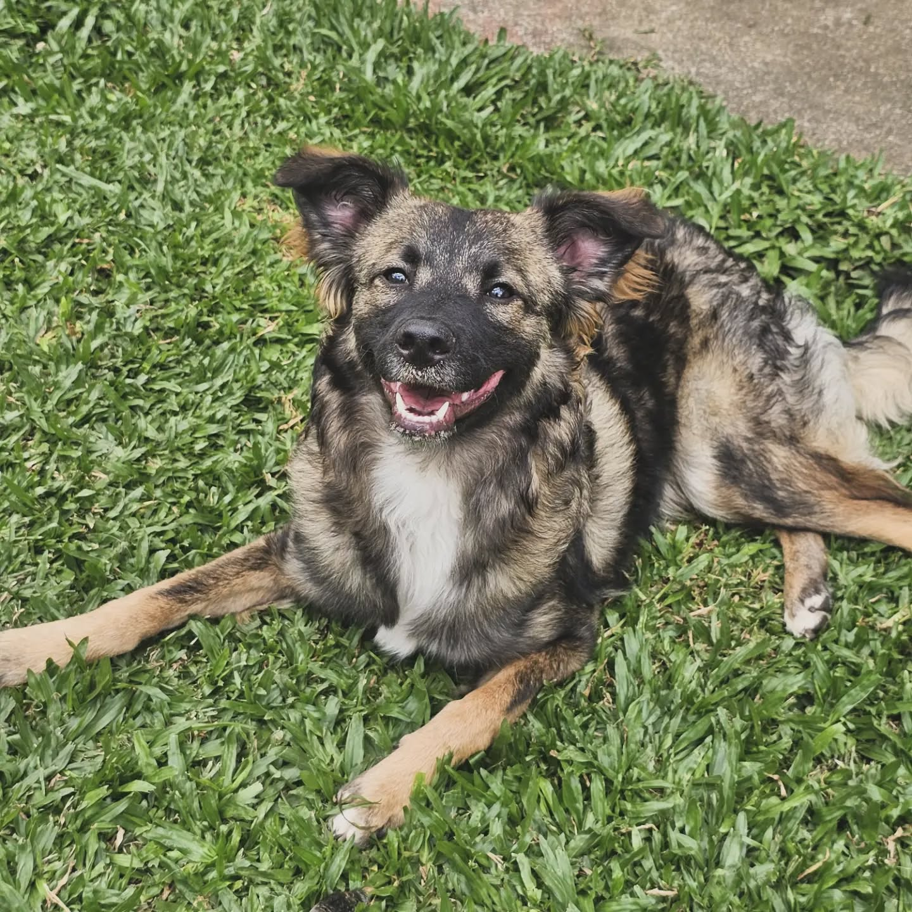
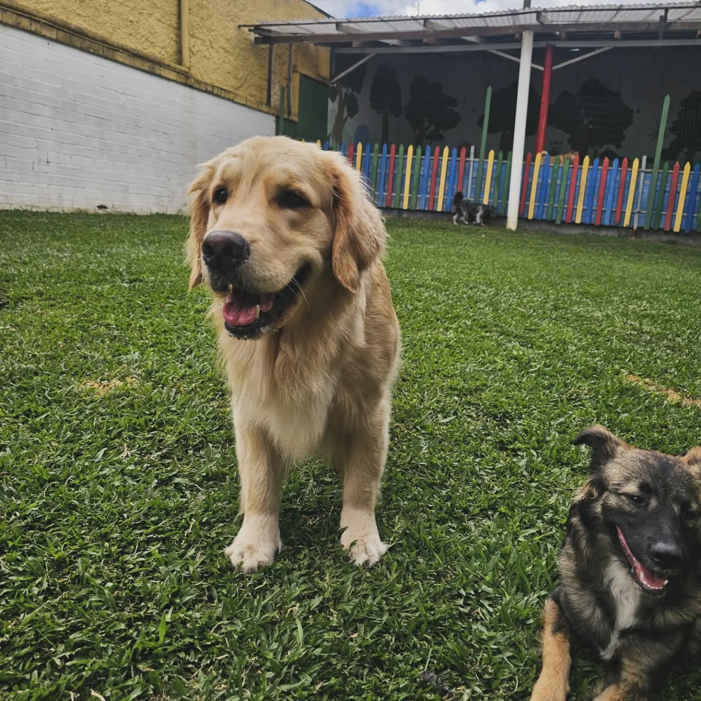
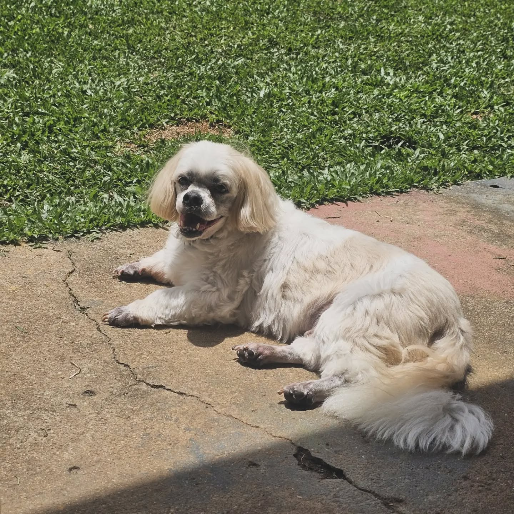
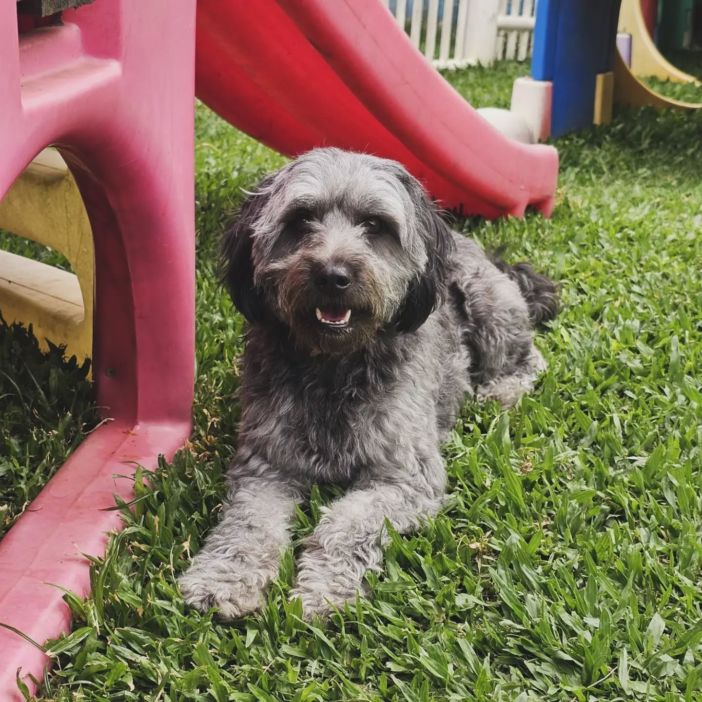

Creche para cães
Um espaço para brincar, conviver e passar o dia com mais movimento. Converse com a equipe para conhecer a rotina e agendar uma visita.
Há mais de 20 anos trazendo alegria para os peludos de Curitiba. Conheça um pouco da creche, veja os serviços e converse com a equipe para combinar uma visita.

Conheça os serviços apresentados pela Pet Center Curitiba. Para entender como cada opção funciona para o seu pet, fale com a equipe e combine uma visita.
Um espaço para brincar, conviver e passar o dia com mais movimento. Converse com a equipe para conhecer a rotina e agendar uma visita.
Serviço de banho e tosa conforme apresentado nos canais da Pet Center. Consulte horários e detalhes diretamente com a equipe.
Antes de decidir, você pode conversar com a equipe e conhecer o espaço pessoalmente. O agendamento é combinado pelo WhatsApp.

A Pet Center Curitiba conta que há mais de 20 anos oferece serviços de creche na cidade. Esta prévia organiza as informações para que tutores possam conhecer um pouco do espaço antes de conversar com a equipe.
O próximo passo continua sendo pessoal: chamar no WhatsApp, tirar dúvidas e agendar uma visita para conhecer a creche.
Explore os serviços e fotos disponíveis.
Fale diretamente com a equipe pelo WhatsApp.
Combine um horário para conhecer o local.
Fotos publicadas nos canais da Pet Center Curitiba. Consulte a equipe sobre a rotina atual e as opções disponíveis.


A Pet Center Curitiba fica na Rua Alagoas, 3329. Chame a equipe para confirmar o melhor horário e combinar sua visita.
Chame a equipe pelo WhatsApp e combine uma visita ao espaço.
As informações atuais são confirmadas diretamente com a Pet Center Curitiba pelo WhatsApp.
Não. A página ajuda a conhecer melhor o espaço; dúvidas específicas e agendamentos seguem com a equipe.